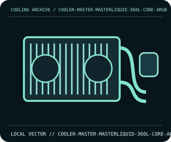

[ INDIVIDUAL COMPONENT // COOLING ]
Cooler Master MasterLiquid 360L Core ARGB
360 mm AIO with a 394 mm radiator and three 120 mm PWM ARGB fans.

IDENTIFICATION: Confirm the complete model, revision, included mounting hardware, and host requirements against the manufacturer documentation before installation.
Manufacturer specifications
| Catalog subcategory | All-in-one liquid coolers |
|---|---|
| Exact model | Cooler Master MasterLiquid 360L Core ARGB |
| Radiator | 394 × 119.6 × 27.2 mm radiator. |
| Fans | Three 120 × 120 × 25 mm PWM fans; 650–1750 rpm ±10%, up to 71.93 CFM per fan. |
| Noise and lighting | Manufacturer lists fan noise below 27 dBA; fan ARGB requires a compatible 5 V addressable header/controller. |
| Socket and fit | Intel LGA1700/LGA1200/LGA115x/LGA1366 and AMD AM5/AM4; confirm bracket revision and case clearance for a 360 mm radiator. |
Compatibility and installation
Follow Cooler Master’s model manual for pump-block orientation and radiator placement. Connect pump/fans to suitable headers, connect ARGB only to a 5 V header, and verify that the case supports the full radiator length and fan stack.
- Disconnect system power before installation or rewiring, and follow the exact model manual.
- After assembly, confirm fan/pump operation and monitor temperatures before sustained workload.
Manufacturer source
- Cooler Master — MasterLiquid 360L Core ARGB specificationsManufacturer product documentation; check the current model revision, package contents, and local socket kit before purchase or installation.
This static catalog entry is an identification aid, not a compatibility guarantee; fit and ratings can vary by revision, mounting kit, and host configuration.